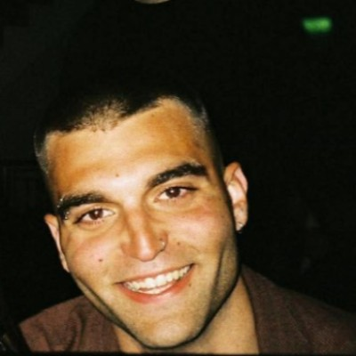

Kostis Spyroglou
I'd like to call myself a creative technologist, but I am probably just a trepid cacologist.
My interest is creative media. My professional work spans games production and QA, research and communication.

I'd like to call myself a creative technologist, but I am probably just a trepid cacologist.
My interest is creative media. My professional work spans games production and QA, research and communication.